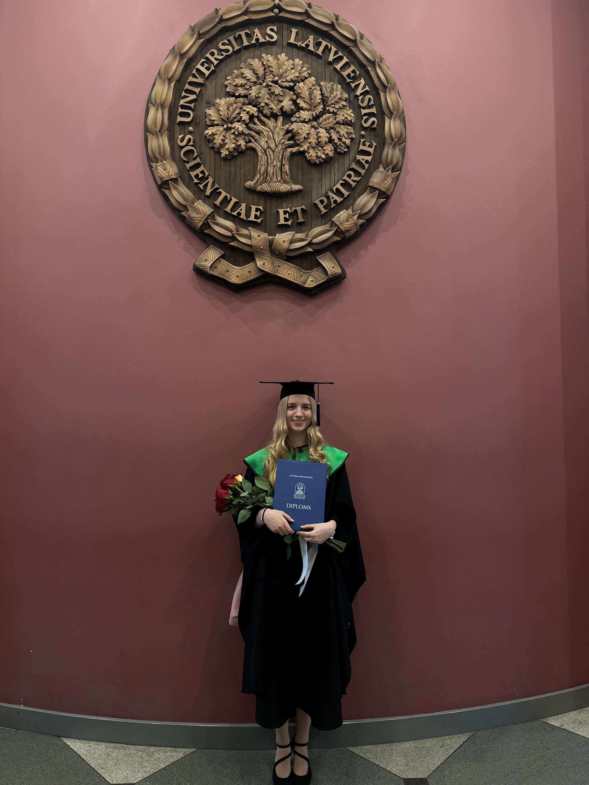
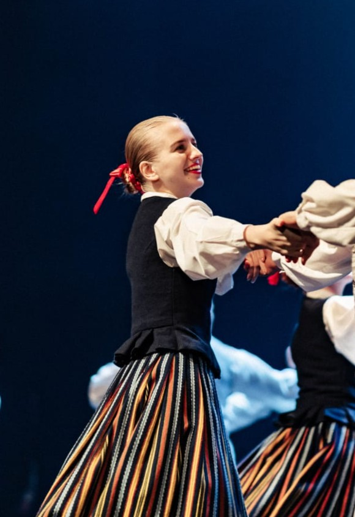
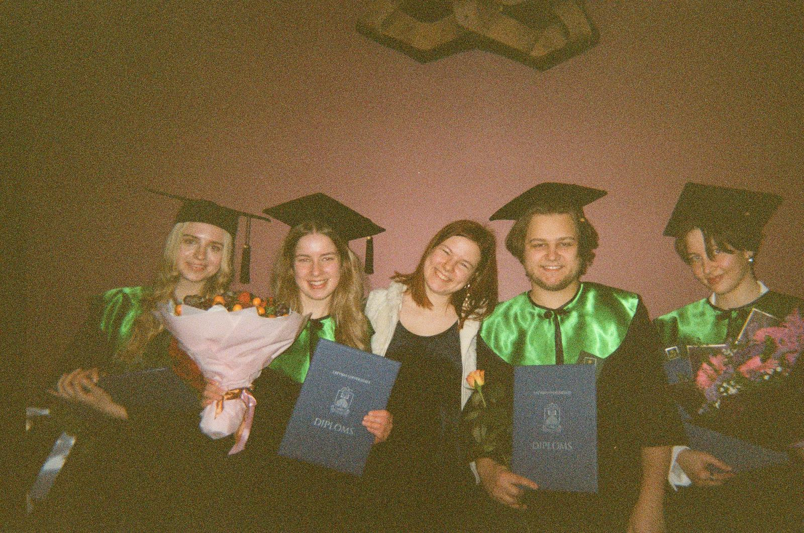

Pirmdiena
8:30–10:10 Dabas zinātnes
10:30–12:10 Dabas zinātnes
Šajā dienā tiek apgūti vispārīgās fizikas pamati, kas palīdz izprast dabaszinātņu nozīmi datorikas jomā.
Mans studiju ritms, intereses un ikdienas iedvesma.
Čau! Mani sauc Hedija Šķestere, un šī mājaslapa ir neliels ieskats manā studiju ikdienā. Es mācos Latvijas Universitātes Eksakto zinātņu un tehnoloģiju fakultātes Datorikas nodaļā un šobrīd esmu 3. kursā.
Studijās ikdienā sastopos ar programmēšanu dažādās valodās, tīmekļa dizainu, algoritmiem, matemātiku un programmatūras testēšanu. Sevi raksturotu kā atbildīgu, pacietīgu un zinātkāru cilvēku, kuram patīk soli pa solim apgūt jaunas lietas.
Ārpus studijām es strādāju un dejoju tautas dejas, kas man palīdz atpūsties un saglabāt aktīvu dzīvesveidu.

8:30–10:10 Dabas zinātnes
10:30–12:10 Dabas zinātnes
Šajā dienā tiek apgūti vispārīgās fizikas pamati, kas palīdz izprast dabaszinātņu nozīmi datorikas jomā.
14:30–16:10 Algoritmu teorija
Kurss iepazīstina ar skaitļošanas teorijas pamatiem, algoritmu sarežģītību un problēmu analīzi.
8:30–10:10 Tīmekļa dizaina pamati
10:30–12:10 Kombinatorika
16:30–18:05 Tīmekļa dizaina pamati
Trešdienās tiek apvienota radoša tīmekļa dizaina apguve ar kombinatorisku domāšanu un uzdevumu risināšanu.
16:30–18:05 Objektorientētā programmēšana
18:15–19:45 Objektorientētā programmēšana
Šajā kursā tiek apgūti objektorientētās programmēšanas principi un to pielietošana, galvenokārt izmantojot Java.
8:30–10:10 Sporta aktivitātes I
14:30–16:00 Vācu valoda I
Piektdienās studiju nedēļa noslēdzas ar fiziskām aktivitātēm un vācu valodas pamatu apguvi.

Tautas dejas ir viena no manām svarīgākajām ārpusstudiju aktivitātēm. Es dejoju jau 15 gadus, tāpēc dejas ir kļuvušas par lielu daļu no manas ikdienas. Man tajās patīk viss kopā: kustība, mūzika, kolektīvs, tradīcijas un koncerti. Mēģinājumi palīdz izkustēties pēc studijām un darba, kā arī ļauj satikt cilvēkus, ar kuriem ir kopīgas intereses.
Brīvajā laikā man ir svarīgi satikt draugus, jo tas palīdz atpūsties un uzkrāt jaunu enerģiju. Mēs ejam uz kafejnīcām, filmām, muzejiem un koncertiem, kā arī svinam viens otra dzimšanas dienas. Dažreiz vienkārši braucu ciemos, lai parunātos un pavadītu mierīgu vakaru kopā. Šādi brīži dod prieku, mieru un motivāciju turpināt iesākto arī saspringtākās studiju nedēļās.

“Man nav īpaša talanta. Es esmu tikai ļoti zinātkārs.”
“Labāk iet kopā ar draugu tumsā, nekā vienai gaismā.”
“Nav svarīgi, cik lēni tu ej, kamēr vien neapstājies.”
Darba nosaukums: Mana ikdiena studijās
Autore: Hedija Šķestere
Universitāte: Latvijas Universitāte
Fakultāte: Eksakto zinātņu un tehnoloģiju fakultātes Datorikas nodaļa
E-pasts: hedija.skestere@gmail.com